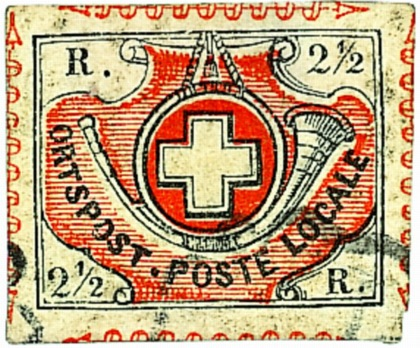
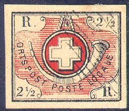
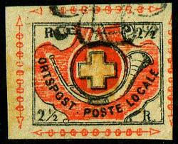
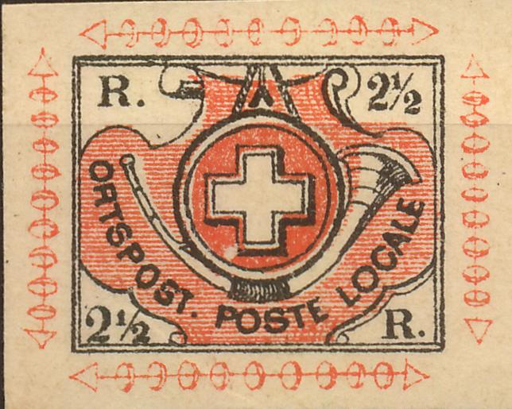
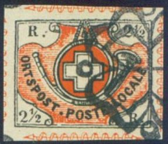
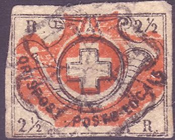
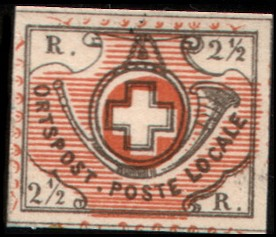
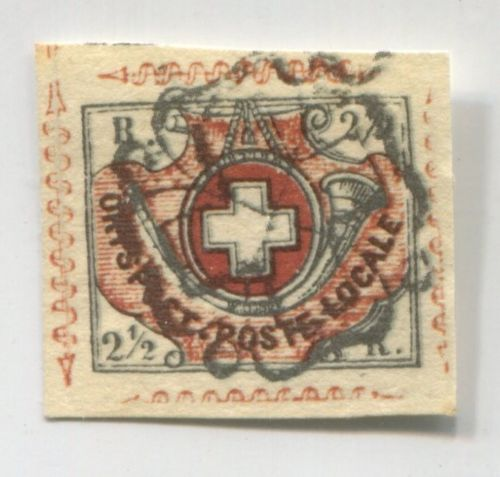

{kind=link}


Return To Catalogue - Basel - Geneva - Neuchatel - Vaud - Zurich - Switzerland overview
Note: on my website many of the
pictures can not be seen! They are of course present in the
catalogue;
contact me if you want to purchase it.
Many stamps of the first issued and cantonal stamps can be found on the website http://www.ghonegger.ch/ (with many beautiful pictures of the rarities of this country).
These stamps are commonly known as the 'Winterthur' issue, however, they were actually used in Zurich.
2 1/2 r black and red
Genuine stamps have a dot behind "ORTSPOST", this dot is quite large (some forgeries have a small dot). There are nine curves in the ornaments of each arrow. The there are 8 strands of the left rope that holds the horn and 9 strands on the right hand side.

(Two genuine stamps, note the 'arrow' between the two stamps)
Value of the stamps |
|||
vc = very common c = common * = not so common ** = uncommon |
*** = very uncommon R = rare RR = very rare RRR = extremely rare |
||
| Value | Unused | Used | Remarks |
| 2 1/2 r | RRR | RRR | Issued around March 1850 |
Cancels, examples:


Pair with black Rozette cancel also used in Zurich. Also 'P.P.'
cancels of Zurich were used here.
First forgery of Album Weeds:


In the above forgeries there is no dot behind "ORTSPOST". The arrows and spirals outside the stamp are missing. There are many other differences with the genuine stamp. These forgeries exist printed in one sheet, the Neuchatel stamps, together with some 5 c "ORTSPOST" stamps, 4 c and 5 c Vaud stamps and the Winterthur stamps (essentially all stamps that were printed in black and red). Click here for such a sheet. Here part of such a sheet of forgeries where these forgeries are printed together with the first Vaud forgeries:

(Sheet of forgeries, printed together with Vaud issue, reduced
size)

In the genuine stamps, there should be a large stop after "ORTSPOST". The first stamp shown above doesn't have this stop. The forger also must have noticed this and has added a stop in the second forgery shown above. Nevertheless the "2 1/2" is placed too far to the right in this forgery. There are also many other differences.

The above forgeries have the arrows different, there are small ellipses on each of them, instead of the spiral pattern of the genuine stamps. It is probably forgery No.11 described by De Reuterskiöld in The Philatelic Record 29, page 62 (1907). The central ring is too narrow and the cross has the inner frame too near to the outer one.
Fournier forgeries:


Fournier forgeries, the dot behind "ORTSPOST" is too
close to the "T"?
(Reduced size)
The above forgeries are Fournier forgeries, however, they don't resemble the forgeries in 'The Fournier album of philatelic forgeries' (apparently he made or at least sold two types of forgeries). I've seen them with "FAC-SIMILE" printed on the backside (as in the Fournier Album). The lower and upper arches are too long in the above forgeries.

Fournier forgery from the Fournier Album of Philatelic Forgeries.
The arrows have small ellipses on them instead of a wavy pattern.
The "S" of "POSTE" is too broad and the
"O" of "LOCALE" is too round. Compared to a
genuine stamp, the "." behind "ORTSPOST" is
too close to this word (genuine stamps have the dot in the middle
of "ORTSPOST" and "POSTE"). I've also seen a
cancelled version of this forgery type (strongly resembling a
genuine rosette cancel).

Fournier forgeries as found in a Fournier Album.
Forgery, made by Peter Winter?
I suspect that the above forgery could be one made by Peter Winter. Note the ragged frameline above the "2 1/2" in the upper right corner. Winter forgeries were made in the 1980's and are printed on very modern white paper (usually this should be enough to detect them at a glance).

(Some other Winter forgeries)

(Forgery with wrong colours of background lines)


(Forgery with overprint "FACSIMILE", it is a Champion forgery which first appeared in
1888 http://www.swiss-stamps.us/HB/HB0206.pdf). According to De
Reuterskiöld in The Philatelic Record 29, page 62 (1907), the
left side of the horn (above the "S" of
"POST") has a line that is not similar to a genuine
stamp (it continues across the horn).
It also exists with a much larger straight "FACSIMILE" instead of the curved violet small "FACSIMILE" overprint (see second image above).

(A forgery with no arrows)


Two different forgeries with the bottoms of the "2"s
straight instead of wavy. The left two forgeries also have too
many wavy lines above the bottom right "R".

Other forgery


Yet another type of forgery.

Possible cut from a Menke-Huber postcard.

Very dubious item, the black letters "ORTSPOST POSTE
LOCALE" have red shading!
Sperati made two 'Reproductions' of this stamp:


Sperati forgeries.
Sperati forgery 'proof' of Reproduction 'B' of the red part (here
in black color), reduced size

Sperati Reproduction 'B', it has a broken outer frameline above
the upper '1/2'.
In the Bulletin of the Helvetia Society for
Collectors of Switzerland (Vol. II, no 6, 1939)
http://www.swiss-stamps.us/HB/HB0206.pdf, the following statement
by Henry W. Salisbury can be found: "There are numerous
forgeries of this stamp as of all the early issues of Switzerland
but ouside of one, the photolithographed counterfeit of Venturini, they are fairly
easily detected. ...... As I mentioned before the realy dangerous
forgery is the one put out by Oneglia-Venturini of Turin, by a
photolithograpic process which is very difficult to recognize
wihout testing very accurately for size, paper and ink"
De Reuterskiöld in The Philatelic Record 29, page 62 (1907,
see archive.org) says with respect to this forgery:
"No. 9.—Photo-lithographic imitation by Oneglia and
Venturini, of Turin. This is a very dangerous forgery, and only
differs from the original in one or two minor details, which I do
not think it expedient to describe."

Very deceptive forgery, could this be the Venturini forgery?
{kind=link}
{kind=link}
{kind=link}
{kind=link}
{kind=link}